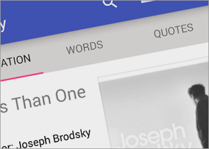
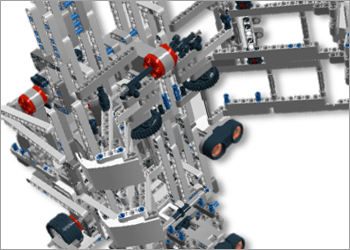
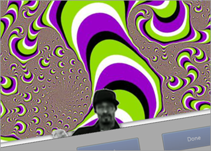
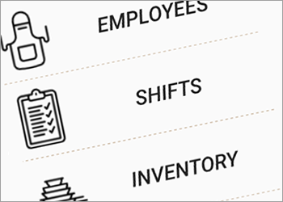
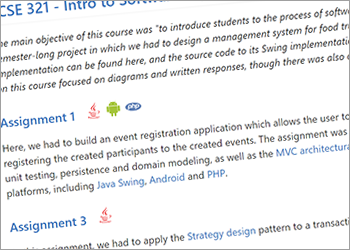

Literary 
(Under development) Literary is an Android application which aims to facilitate and enrich the reading experience. The application allows users to keep track of all their books by providing a simple way of connecting to Google Book's API. Readers can quickly retrieve definitions of unfamiliar words thanks to the integrated JWI library, which can then be saved inside the book's profile for later retrieval. Among other distinguishing features, Literary grants the possibility of storing and managing quotes through pictures and associated descriptions, so as to give all striking passages the organization they deserve. Externalize your memory by maintaining a simple and compact collection of all material associated with your books.
"...the good reader is one who has imagination, memory, a dictionary, and some artistic sense..." — Vladimir Nabokov
Robot Design Project
Lego EV3 Mindstorm robot built under the Lejos framework for my Design Principles and Methods course at McGill University. The robot's purpose was to partake in a competition in which it had to construct towers out of Styrofoam blocks that were dispersed all across an arena filled with obstacles. As the project's Software Manager, I was responsible for calling all design decisions related to architecture and algorithm implementation, as well as handling a great portion of the documentation associated with the robot, such as the project's Requirements and Software documents, among others. In addition to coordinating all operations with our hardware and testing teams, I also had to, evidently, apply my technical knowledge of Java in order to write-up some actual source code.

Java Integrative Project
End-of-program integrative project which concluded my studies at Vanier College. We were required to write a complete interdisciplinary case study in light of the objectives and competencies for the course, i.e. testing the programming as well as scientific knowledge acquired throughout the duration of my two years in CEGEP. The program is capable of demonstrating six different experiments in the fields of physics, mathematics and chemistry. My contribution to the project came in the form of front-end development, including interface design, CSS and animations, as well as through the implementation of a ray optics simulation and a demonstration of Newton's laws of gravity. As a team, we achieved the highest grade of the course for our code and presentation.

Blue Jay's Cuisine
Multi-platform application put together after a semester-long project in my Intro to Software Engineering course. In short, we were required to implement a food truck management system by adhering to the Agile software development methodology through a series of weekly deliverables. As to what concerns the source code, I was in charge of implementing the controllers used for all three platforms, both in PHP and Java. Furthermore, I had the opportunity to write out a large chunk of the Android implementation. The project allowed me to become familiar with the MVC and Client-Server architectures, as well as with design patterns as varied Singleton, Factory, Composite and Adapter, among many others.

Assignments
Comprehensive collection of most of the programming assignments which I have completed throughout my academic career. Some of the languages I have used to complete different assignments are Java, C, Python, Bash, PHP and MIPS Assembly. I am hoping that this compilation will be able to demonstrate the care which I apply to my schoolwork. Additionally, I believe that these assignments represent a good way of tracing a timeline of my development as a programmer.
Personal Portfolio Website
Source code to the website that you are seeing right here. I have used mostly HTML and CSS for the design, but also sparkles of JS. As you can see, the website has been built using the Bootstrap framework. I am planning to implement more flashy features in the future, whenever the my programming muse comes for a visit.